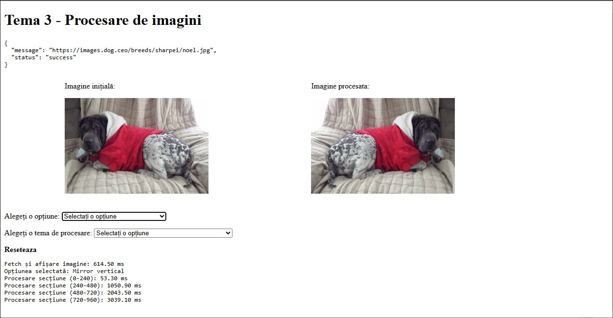

/* The network is designed to solve a regression problem by predicting wine quality scores based on the wine’s chemical composition. It is a simple neural network consisting of a single hidden layer.*/
</ My Projects in Automation and Programming >
Additional details on GitHub
GITHUBTIME GLITCH - HACKITALL PLAYTIKA
MORE DETAILS/* Because of a time glitch, you've been thrown into the past. To return to the present, you must follow mysterious voices—some echoing from the past, others from the future—that will guide you through a series of trials. Your task is to collect and assemble the parts of a special device that will send you back home. But don’t waste a moment—the clock is slipping away.*/
Language: Unity, C#
THE MAZE - GAME WITH GAME INTERFACE
MORE DETAILS/* The game is represented by a maze, the player can create an account and start the fun, the goal is to find the exit in the shortest time possible, using the keyboard. The player's activity is saved locally, and each window is implemented separately.*/
Language: JAVA

HOMEWORK - WEB TEHNIQUES
MORE DETAILS/* Interactive application for image processing, taken from an API with dogs, the user can choose to apply certain filters to the image, to observe how and what changes are made.*/
Language: HTML, JavaScript
HOMEWORK - OBJECT ORIENTED PROGRAMMING
MORE DETAILS/* An online rock store sells several categories of products and handles the receipt, processing and delivery of orders. The application offers an easy-to-use environment, options are entered from the keyboard, and the user is allowed to manage actual operations with employees, products, can run a simulation of order processing and can create reports based on employee activity.*/
Language: C++
FRONT END - ZEBRA HACK
MORE DETAILS/* Developing a web application to streamline and automate the procurement process based on requisition emails received from employees across various departments. The proposed solution will simplify vendor selection, bid analysis, and report generation, reducing the time and resources allocated to this process.*/
Language: HTML, CSS, JavaScript

HOMEWORK 2 - DESIGN OF ALGORITHMS
MORE DETAILS/* In the case of a single tournament, like the one you simulated in Homework 1, creating the participants' ranking is not an issue: the first place is occupied by the winner of the final, and the last place is occupied by the player/team who hasn't won any matches, etc. However, when considering the results of multiple competitions, things get more complicated: two players may have the same number of victories, but if one of them has a victory against a world champion, this victory should count for more. */
Language: C

HOMEWORK 1 - DESIGN OF ALGORITHMS
MORE DETAILS/* The Faculty of Automation and Computers, through LSAC, organizes a LAN Party every semester where all students who want to test their skills in a specific game participate. The goal is to create a software solution (executable program) that can automate this process. */
Language: C
THE SHORTEST ROUTE - METRO
MORE DETAILS/* To get from one place to another (in Bucharest), one solution is to use the metro, but it is important to choose the most efficient route, in order to reach the destination in the shortest time possible. The solution to the problem involves finding the shortest path, in terms of the number of stations. */
Language: C

CREATING A RANKING IN EXCEL
MORE DETAILS/* In a contest, it is very important to list the competitors based on the scores they obtained. Therefore, creating a ranking, based on the results achieved by them, in an Excel document is a good choice, as managing the ranking becomes much easier. In a well-formatted table, per the position obtained, it is much easier to observe the positions occupied by the respective individuals. */
Language: C
DRAFT PROJECT - MANAGEMENT OF THE BACHELOR'S EXAMINATION
MORE DETAILS/* The baccalaureate exam represents an essential stage in a person's life, meaning it requires extremely good organization. Taking into account the necessary staff, such as teachers, assistants, and students taking the exam, each needs a separate rubric with different information, which must be managed and stored properly. Therefore, we need a well-structured database to optimize the effort and process of using it. */
Language: SQL

Tic Tac Toe - Console Game
MORE DETAILS/* Implementation of a game of Tic Tac Toe on the console, requiring 2 players, who will enter from the keyboard the positions in which they want to enter the move. */
Language: C++